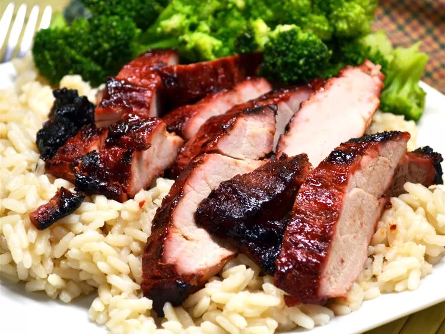
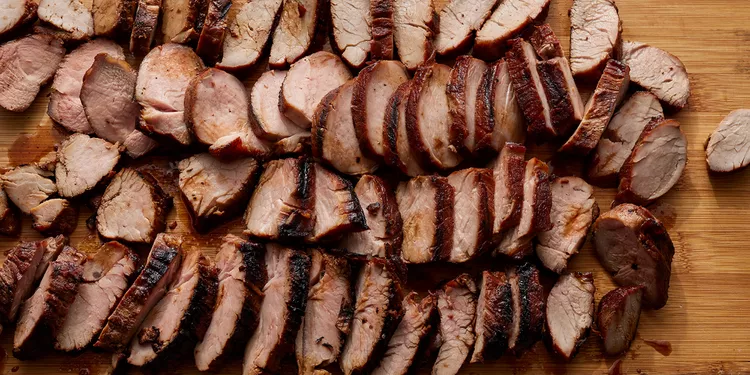

Char Siu (Chinese BBQ Pork)
Char siu is Chinese restaurant-style pork with a deep red, sweet and sticky coating.

Description
Char siu literally means "fork roast" and refers to the traditional method of cooking this dish by which strips of
seasoned pork were skewered with long forks and roasted in a covered oven or over a fire.
This version uses pork tenderloin and is easy to make at home on your charcoal grill.
Enjoy the sweet and salty taste on its own or serve it over rice or noodles.

List of ingredients:
- ½ cup soy sauce
- ⅓ cup honey
- ⅓ cup ketchup
- ⅓ cup brown sugar
- ¼ cup Chinese rice wine
- 2 tablespoons hoisin sauce
- 2 tablespoons red bean curd (Optional)
- 1 teaspoon Chinese five-spice powder (Optional)
- 2 (1 pound) pork tenderloins
Steps how to make delicious BBQ:
- Stir soy sauce, honey, ketchup, brown sugar, rice wine, hoisin sauce, red bean curd, and five-spice powder together in a saucepan over medium-low heat. Cook and stir until just combined and slightly warm, 2 to 3 minutes.
- Meanwhile, slice each pork tenderloin lengthwise into 1 1/2- to 2-inch-thick strips. Place pork strips in a large, resealable plastic bag.
- Pour marinade into the bag with the pork. Squeeze air from the bag, seal, and turn the bag a few times until pork is well coated. Marinate in the refrigerator, 2 hours to overnight.
- When ready to cook, preheat a charcoal grill for medium-high heat and lightly oil the grate.
- Remove pork from marinade and shake to remove excess liquid. Set aside the remaining marinade for basting.
- Rake the hot coals into two equal piles on opposite sides of the charcoal grate. Add a small container of water to the grate. Place pork strips in the center of the grate for indirect cooking.
- Cook pork over indirect heat, turning regularly and basting as desired, until an instant-read thermometer inserted into the center reads at least 145 degrees F (63 degrees C), 30 minutes or longer.
Some tips
If you can't find red bean curd, use 1/2 teaspoon red food coloring instead, if desired.
To cook over indirect heat on a gas grill, simply turn off the center burner. Place food over that burner and it will cook by the heat on either side.
Nutrition Facts (per serving)
Note
The nutrition data for this recipe includes the full amount of marinade ingredients. The actual amount of the marinade consumed will vary.
483 - Calories
9g - Fat
54g - Carbs
44g- Protein